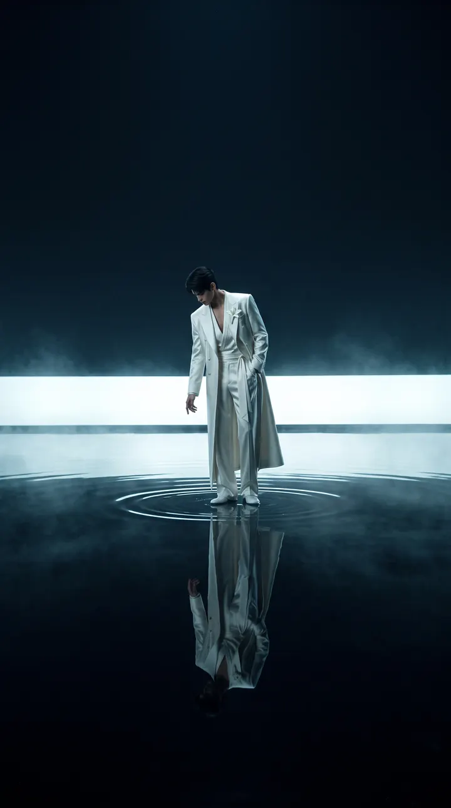
結 01 — LOOK
문태준
- 꽃
- 백합 LILY
- 키
- 195cm
BAND · 2026
네 사람이 하나의 결이 되는 곳
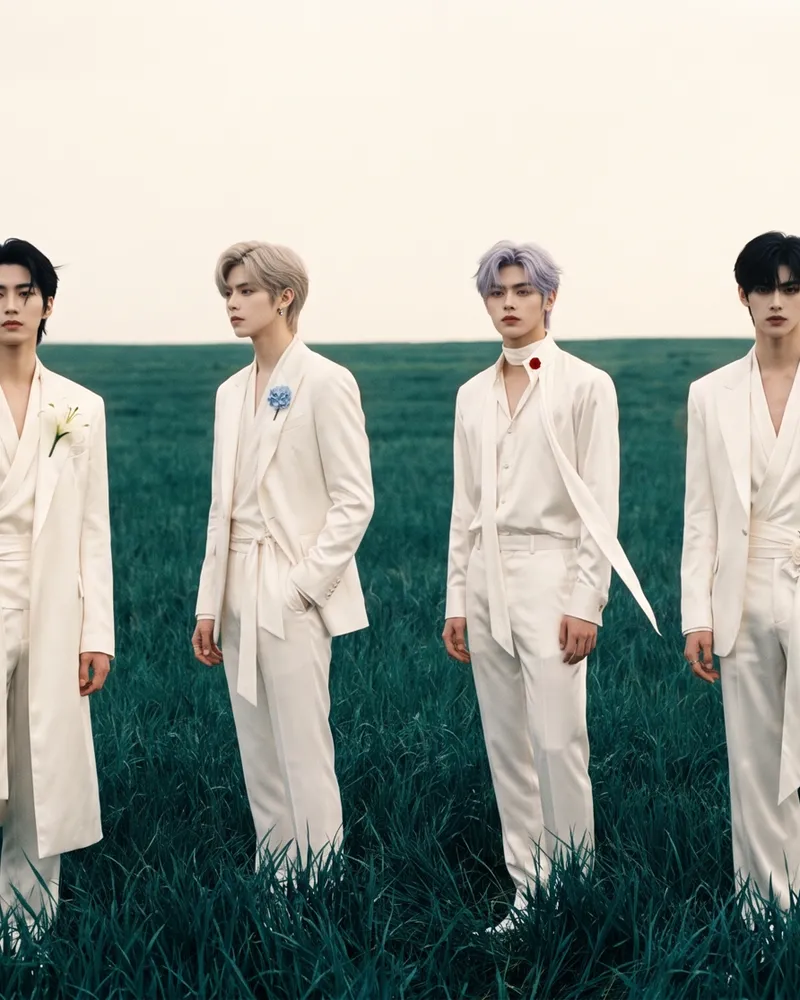
바람이 풀을 한쪽으로 눕힌다. 한 방울이 떨어져 나가기 직전의 고요.

수심 12m. 빛이 닿지 않는 자리에서 먹은 가라앉고, 네 사람의 결이 하나로 엉긴다.

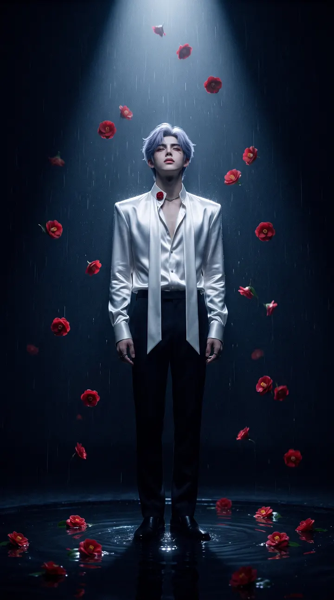
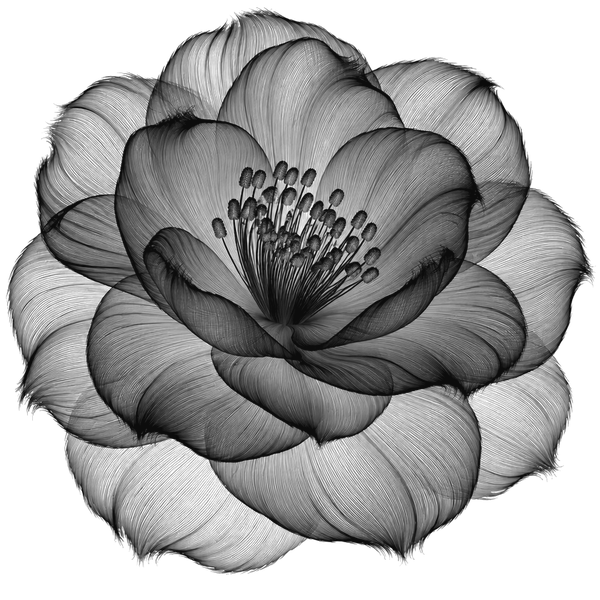
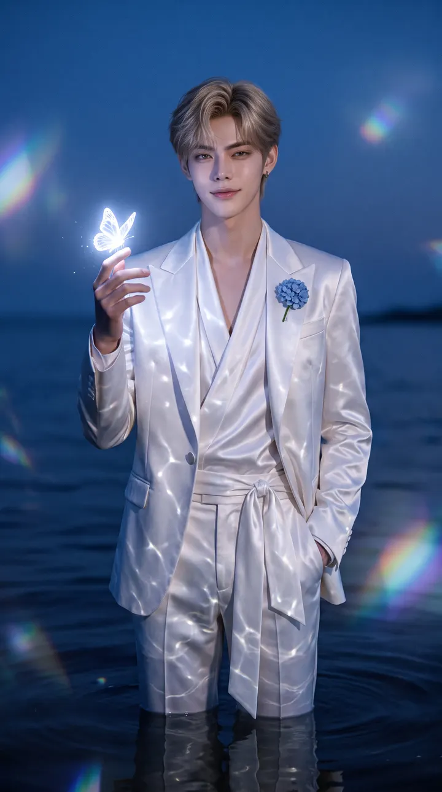
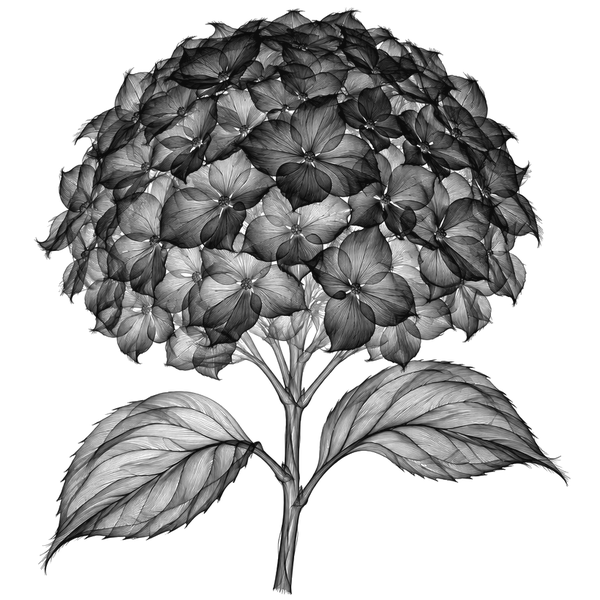
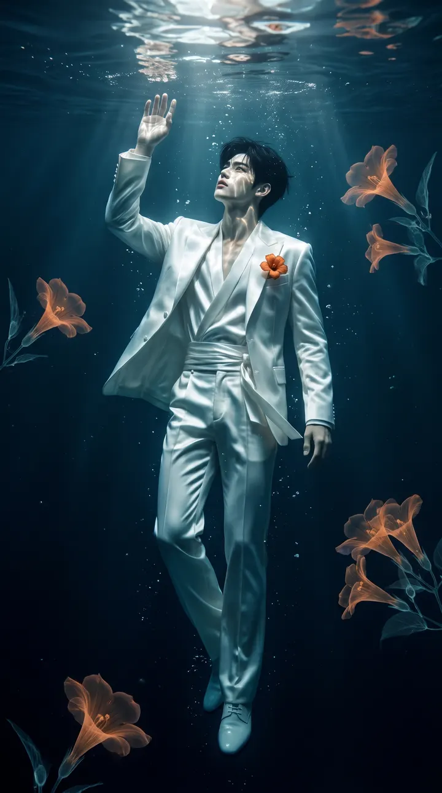
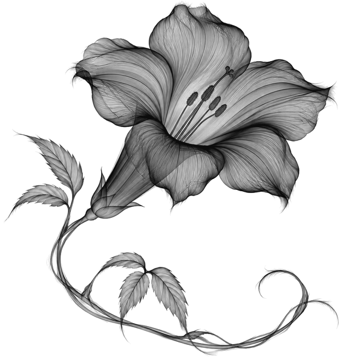
0m. 번진 자리마다 꽃이 핀다. 먹으로 그린 선 위에 색이 돌아온다.
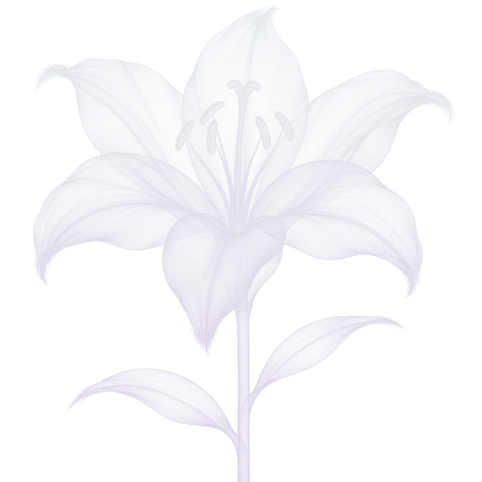
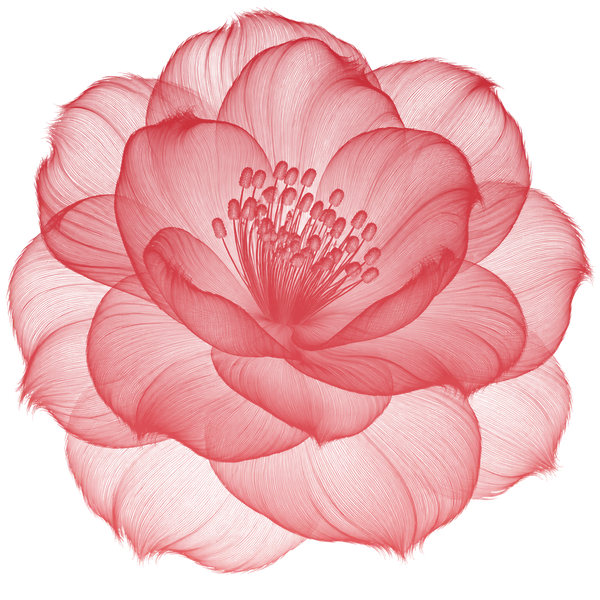
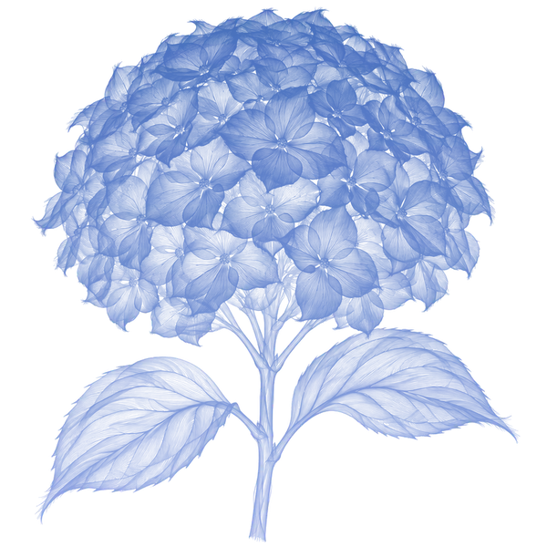
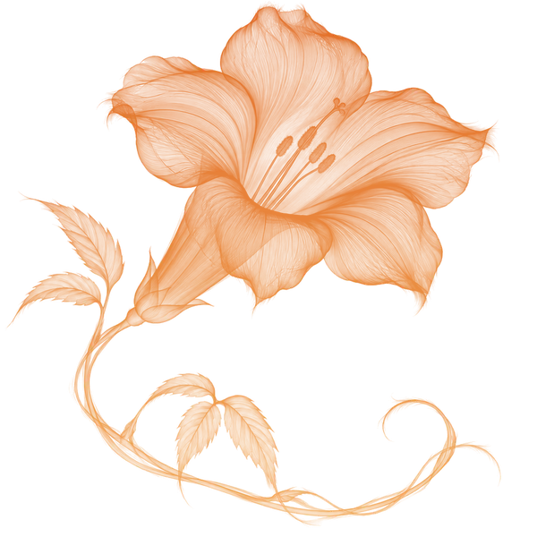
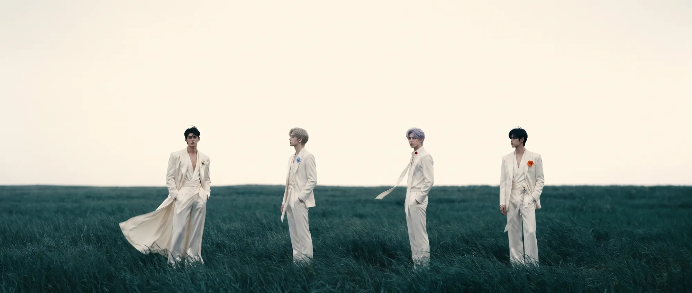
흰 수트의 네 사람. 백합, 동백, 수국, 능소화로 이어지는 네 개의 결.
멤버 보기 →닿는 순간 번지는 소리. 곡 이름을 누르면 20초 미리 듣기가 나와. 한 번에 한 곡만 재생돼.
전체 듣기 →
먹선 한 획이 수면이 되는 곳. 결락의 이야기가 시작된 자리.
이야기 읽기 →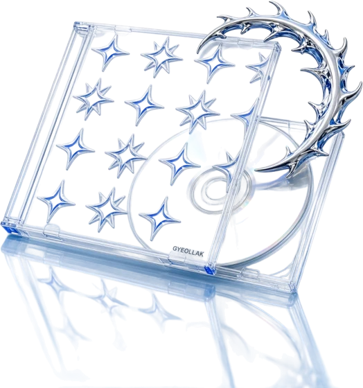
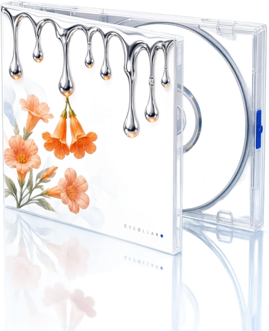
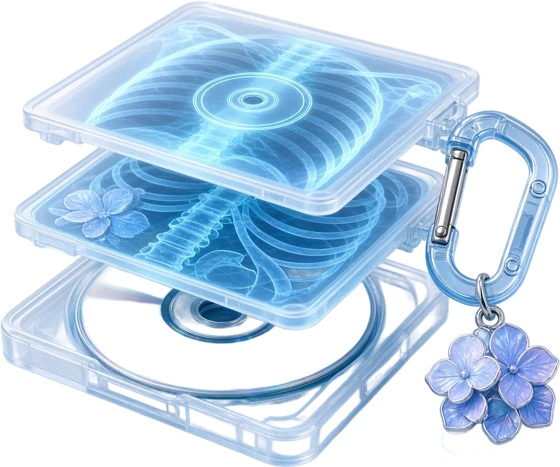
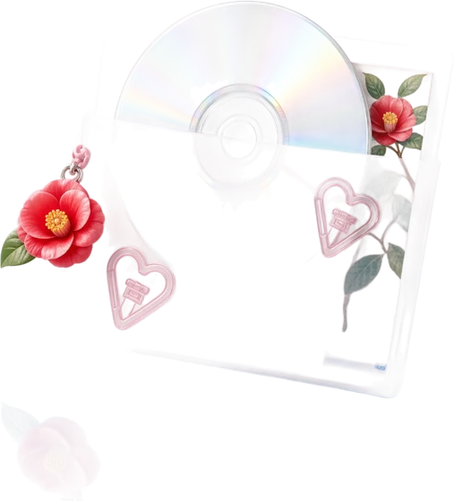
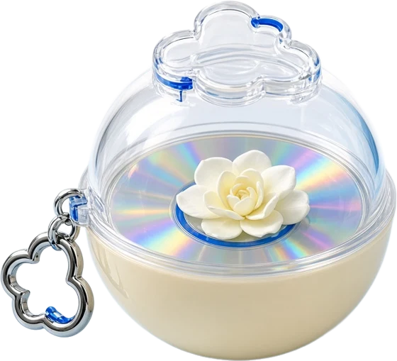
잔상으로 남은 것들. 앨범 케이스 시안과 기록을 모았다.
아카이브 열기 →